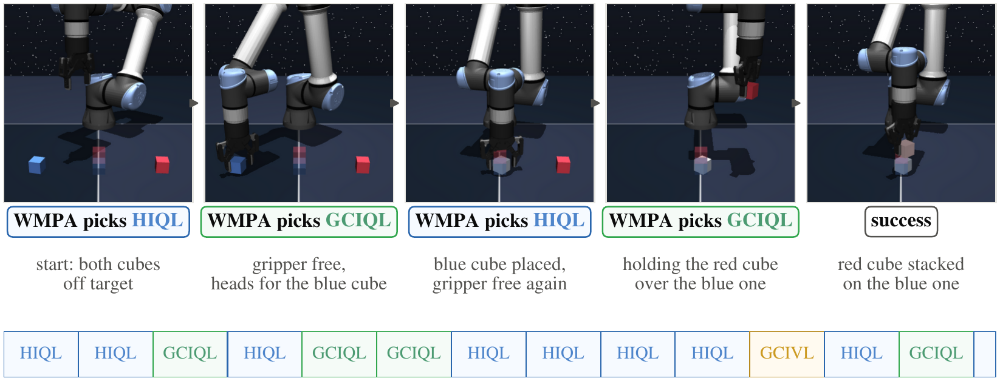

World-Model Policy Arbiter for
Goal-Conditioned Reinforcement Learning
WMPA in Action
No single offline GCRL algorithm is best across tasks, or even across the phases of one task. On cube-double-play, where a robot arm must stack two cubes, GCIQL succeeds in 36% of episodes and HIQL in only 5%. WMPA, choosing among the six frozen policies within each episode, succeeds in 69%.

One cube-double-play episode. Top: the real state at four arbitration steps and at success, with the policy WMPA selects there. Bottom: the policy executed over the whole episode, one block per arbitration. Control alternates between HIQL, which moves the free gripper to the next cube, and GCIQL, which grasps and places it.
Abstract
Offline goal-conditioned reinforcement learning (GCRL) has produced a diverse set of goal-reaching algorithms, yet no single algorithm performs best across environments, goals, and even different phases of the same task. Rather than deploying only the best-performing policy, we ask whether a set of frozen goal-conditioned policies can be used collectively as a portfolio, deciding at every state which policy should act. Choosing a policy at each state is not straightforward. The policies’ own value functions cannot be compared directly: they may use different scales, and some policies have no value function. We need to judge each policy by the states it is likely to reach, even though we can execute only one policy at a time. We also need to avoid switching so often that control becomes unstable. To address these challenges, we introduce World-Model Policy Arbiter (WMPA), a test-time framework that, given a set of frozen policies as input, rolls out each frozen policy in a learned state-space world model, evaluates the imagined futures with a shared goal-conditioned value function, and executes the highest-scoring policy for a short commitment interval before the next round of arbitration (policy selection). WMPA assumes access to a bank of frozen goal-conditioned policies and requires neither policy retraining nor privileged task-specific knowledge. Under the official OGBench evaluation protocol on 18 state-based datasets spanning maze navigation as well as cube, scene, and puzzle manipulation, WMPA improves the macro-average success rate from the 44% achieved by the best policy selected per dataset to 58%, with statistically significant gains on 12 datasets. These gains include +33 percentage points on cube-double-play and +36 percentage points on scene-play.
Results
We evaluate WMPA under the official OGBench protocol on 18 state-based datasets spanning maze navigation and cube, scene, and puzzle manipulation. The bank holds the six OGBench reference learners (GCBC, GCIVL, GCIQL, QRL, CRL, HIQL), and every method runs on the same episodes (5 goals × 50 episodes × 3 bank seeds). WMPA raises the macro-average success rate from 44% for the best single policy per dataset to 58%, with statistically significant gains on 12 datasets. The largest gains are on multi-object manipulation: +41 points on scene-noisy, +36 on scene-play, +35 on cube-double-noisy, and +33 on cube-double-play. Switching to a random policy at the same interval reaches only 39%, and on 7 datasets WMPA significantly exceeds a per-episode hindsight oracle that never switches, so part of the gain comes from composing policies within an episode.
Show the numbers as a table
| Family | Dataset | Best single policy | Best (%) | WMPA (%) | Δ [95% CI] |
|---|---|---|---|---|---|
| Maze | pointmaze-medium-navigate | QRL | 76 ± 17 | 79 ± 3 | +3 [−17, +17] |
| Maze | antmaze-large-navigate | HIQL | 90 ± 3 | 91 ± 3 | +0 [−3, +4] |
| Cube | cube-single-play | GCIQL | 71 ± 3 | 85 ± 3 | +14 [+10, +18]* |
| Cube | cube-single-noisy | GCIQL | 99 ± 1 | 100 ± 0 | +1 [+0, +2]* |
| Cube | cube-double-play | GCIQL | 36 ± 7 | 69 ± 3 | +33 [+25, +40]* |
| Cube | cube-double-noisy | GCIQL | 26 ± 9 | 60 ± 7 | +35 [+30, +40]* |
| Cube | cube-triple-play | CRL | 5 ± 3 | 1 ± 1 | −4 [−8, −1]* |
| Cube | cube-triple-noisy | GCIVL | 9 ± 3 | 18 ± 3 | +9 [+6, +12]* |
| Scene | scene-play | GCIQL | 52 ± 5 | 87 ± 4 | +36 [+30, +41]* |
| Scene | scene-noisy | GCIVL | 30 ± 3 | 70 ± 5 | +41 [+36, +45]* |
| Puzzle | puzzle-3x3-play | GCIQL | 91 ± 4 | 100 ± 0 | +9 [+5, +13]* |
| Puzzle | puzzle-3x3-noisy | GCIQL | 91 ± 3 | 93 ± 2 | +1 [−1, +4] |
| Puzzle | puzzle-4x4-play | GCIQL | 24 ± 5 | 51 ± 8 | +27 [+18, +36]* |
| Puzzle | puzzle-4x4-noisy | GCIQL | 34 ± 5 | 58 ± 11 | +24 [+16, +32]* |
| Puzzle | puzzle-4x5-play | GCIQL | 14 ± 3 | 18 ± 3 | +4 [+3, +6]* |
| Puzzle | puzzle-4x5-noisy | GCIVL | 20 ± 3 | 20 ± 3 | +0 [+0, +1] |
| Puzzle | puzzle-4x6-play | GCIQL | 11 ± 2 | 17 ± 3 | +6 [+3, +9]* |
| Puzzle | puzzle-4x6-noisy | GCIQL | 19 ± 3 | 20 ± 3 | +1 [−0, +2] |
| Average (18 datasets) | 44 | 58 | +13 | ||
Mean success rate ± half-width of the 95% hierarchical-bootstrap interval. Δ is the paired per-episode difference with its 95% interval; * marks an interval that excludes zero.
BibTeX
@article{quan2026wmpa,
title = {World-Model Policy Arbiter for Goal-Conditioned Reinforcement Learning},
author = {Quan, Junwei and Opryshko, Evgenii and Rhinehart, Nicholas and Gilitschenski, Igor},
journal = {arXiv preprint},
year = {2026}
}